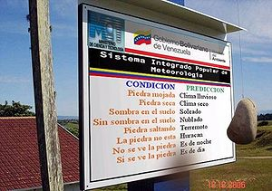
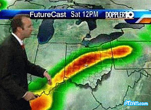
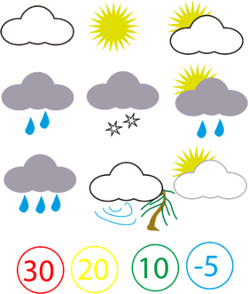

Meteorología
 De: La Frikipedia, la enciclopedia extremadamente seria.
De: La Frikipedia, la enciclopedia extremadamente seria.
Hombre del tiempo anunciando sol para toda la semana (pobres, sin sus pantallas CACA no son nada).
La meteorología (del latín meteorito, piedra grande del cielo y -logía, cosa; que en el espiñol actual se traduciría como piedra grande del cielo cosa) es un ancestral arte de adivinación del clima creada por unos seres con poderes extrasensoriales llamados "hombres del tiempo" (llamados así por su providencia para adivinar el tiempo) que usan unas pantallas mágicas que muestran soles y nubes y rayos, llamadas CACA (Cosa que Adivina el ClimA)
Historia
Desde los anales de la historia, el hombre ansió controlar el tiempo. Las antiguas tribus más avanzadas, hacían ofrendas a Dios, tales como sacrificios humanos para que lloviera, sacrificios humanos para que hiciera sol, sacrficios humanos para ver ano sin ser verano, sacrficios humanos para poder hacer con más facilidad los sacrficios humanos, y sacrficios humanos para no tener insomnio.
Pero su tallarinesca magnaminidad se cansó de tantos sacrificios humanos y mandó a la Tierra a una especie de superhombres llamados hombres del tiempo (llamados así por su capacidad de adivinar el tiempo con sus pantallas especiales CACA).
Y así el resto de seres vivos dejaron los sacrificios humanos solo para los días de fiesta para siempre, y empezaron a disfrutar de sus extrañas adivinaciones y del canalillo de la sub-raza de hombres del tiempo conocida como "mujeres del tiempo".
Actualmente todas las cadenas de televisión tienen por lo menos un hombre del tiempo como mascota, y en ocasiones, varios (suelen traerlos por parejas en cada canal para que se reproduzcan y así tener más muy rápidamente).
Instrumentos y métodos para la adivinación del clima
 El último modelo de artilugio para predecir el tiempo, made in
Chávez... ¡¿POR QUÉ NO SE CALLA?!
 ...chubascos nubosos hacia el Noreste...
 Los símbolos que suelen aparecer en un CACA normal. Por orden de izquierda a derecha y de arriba abajo, las imágenes quieren decir:
1ª: Fumadores sueltos, nube de humo de tabaco
2ª: ¡Sé hacer un sol con 21 puntas y tu no!
3ª: ¡Sé hacer un sol de 21 puntas fumado y tú no!
4ª: Ondié!, la nube de tabaco está sudando!
5ª: ¡La nube de tabaco está cagando estrellitas blancas!
6ª: Soy un crack, y sé dibujar una estrella de 21 puntas fumando una nube de tabaco que suda
7ª:No sé que estará haciendo la nube, que suda como un cerdo
8ª: Cuidado!!, Nube de tabaco arboricida a la vista!
9ª: ¡A mí no me la das!, porque pintes la nube de tabaco de gris no me la cambias, que ya la tengo repe
10ª: Límite de velocidad a 30 km/h
11ª: Límite de velocidad a 20 km/h
12ª: Límite de velocidad a 10 km/h
13ª: Límite de velocidad a... ¿-5 km/h? ¿qué, voy marcha atrás? No está sólo el CACA como único medio para adivinar el tiempo, ¡que va!, hay muchos más formas de adivinarlo de locos (no licenciados en Adivinación Meteorológica) que lo intentan adivinar de otra forma. Vienen aquí todos eses instrumentos (y si no son todos sus jodeis la mayoría) con sus pros y contras, por si alguien los intenta usar en casa.
- El CACA: Cosa que Adivina el ClimA, es una pantallita mágica en la que aparecen soles, nubes, rayos y otras tantas chorradas por el estilo, como la temperatura, la cantidad de genios necesarios para inventar una bombilla, la última peli porno de Aria Giovanni, etc.
- Pros: lo enciendes y ya no tienes que hacer nada, que ya aparecen solos los dibujitos adivina-tiempo. ¡¡¡¡¡Y la última peli de Aria Giovanni!!!!! (sé que ya lo he dicho, pero es un pro muy grande).
- Contras: si no eres un hombre del tiempo no puedes tener la CACA-pantalla-mágica. Si la usas sin ser hombre del tiempo, lo más probable es que te quedes ciego después de la primera predicción y/o/u/e/w la primera escena de cama de Aria Giovanni.
- La mierda pinchada en un palo: el típico instrumento multiusos, que además de adivinar el tiempo, da la hora y te prepara una tortilla francesa.
- Pros: es económico y de confianza. ¡Y sabe hacer tortillas francesas!
- Contras: su olor puede atraer a los parásitos, las moscas, y a los que anuncian créditos en la tele. Y sus tortillas francesas tienen un olor y un sabor que aún no me acaba de convencer.
- La Piedra'l tiempo, fahsihta. Piedra mojada: clima lluvioso. Piedra seca: clima seco. Con sombra en el suelo: soleado. Sin sombra en el suelo: nublado. Piedra saltando: terremoto. La piedra no está: huracán. No se ve la piedra: es de noche. Sí se ve la piedra: es de día.
- Pros: fúcil, ¿no?
- Contras: made in feito na casa de Chávez
- El escupitajo al aire: método de uso: escupir al aire (sencillo ¿no?).
- Pros: sabes la dirección del aire, y si usas la versión premium del escupitajo al aire, además te trae de regalo un Correquetecagas de serie. ¡Gratis!
- Contras: el escupitajo te puede caer en un ojo, y si es muy grande, te pueden tener que operar para que no surja una disfunción corporal de la vístula izquierda anterior cruzada.
- Escupir en el dedo: aún más sencillo que el anterior, esta vez hechas
la lefa el escupitajo en la punta de la polla del dedo y lo levantas al aire (obvio ¿no?).
- Pros: queda muy profesional, muy útil para impresionar a las chicas.
- Contras: ¿esto sirve para adivinar el tiempo?.
- El paraguas: es muy fácil de usar, te compras un paraguas y te lo llevas contigo=buen tiempo. Te lo dejas en la casa=mal tiempo. No falla, más que adivinar el tiempo, lo controla.
- Pros: fácil de usar, y completamente infalible.
- Contras: si compras un paraguas y lo pierdes, prepárate para ver llover toda tu vida.
- La polla (only for men): otro instrumento multiusos, que además de ser productor de lefa, muñeco látigo, quitapenas... sirve para adivinar el tiempo. Modo de uso: ir a fuera, sacarse la polla y menearla hasta que se pueda saber que tiempo va a hacer.
- Pros: si e eres honbre, te biene de serie y no tienes que pagar por ella. Además, tiene la ventaja que si te ve la vecina meneándola, que le guste lo que vea, y te pida que la lleves a salir.
- Contras: puedes cojer el moquillo por el cambio de temperatura, y en el peor de los casos, se te puede gangrenar la polla ¡¡¡¡NOOOOOOOOOOOOOOOOOOOOOOOOOOOOOOOO!!!!.
- Globo meteorológico: algunos científicos se entretienen jugando con globos y dicen que sirven para adivinar el tiempo. Pobres ilusos.
- Pros: entretenerse mirando como vuela el globo y con sus colorines ¡¡Wii!!
- Contras: por mucho que digan los científicos, no sirve para adivinar el tiempo.
- Las verduras de Paco Porras: mediante un ritual mágico con verduras, adivinas el tiempo, los años que te quedan de vida, la cantidad de días que te quedarás en casa viendo catálogos de lencería, la cantidad de veces que vas a visitar la Frikipedia en toda tu vida, la cantidad de cosas que puedes meter en una sola enumeración...
- Pros: muy útil, y aprendes cantidad de cosas que te pasarán en la vida (y todo a base de pepino y
porro puerro ¡como avanza la ciencia).
- Contras: es totalmente desaconsejable usar este método si no está Paco Porras cerca, pero también es totalmente desaconsejable tener a Paco Porras cerca (¡a saber que hace con el pepino y las cebollitas!).
- Consultorio de la gitana: lo típico, vas a Ver a una gitana para que te adivine tu futuro y de paso
la talla de sujetador de la Elsa Pataky el tiempo de todo el año.
- Pros: años de experiencia, seguro que te lo adivina todo en un volao por solo quinientos leros (¡oferta especial!!)
- Contras: que se cabree contigo por no tener el dinero, te eche un maleficio, y te mueras de una forma horrible y dolorosa (como que venga un elefante asiático, te cague encima y mueras asfixiado, te caiga un avión en la cabeza, o veas a Marujita Díaz desnuda ¡¡¡¡¡NO!!!!!).
- Usar la máquina del tiempo para ir al futuro y saber que tiempo hará mañana (o el año entero) y volver al pasado.
- Pros: muy original, seguro que nadie te copia la idea.
- Contras: que en el futuro te quedes sin gasolina para la máquina del tiempo, se hallan acababado las reservas de petróleo mundiales y no puedas volver al pasado. Así y todo, ¿de donde coño sacas una máquina del tiempo?.
- Hacerte amigo de un hombre/mujer del tiempo
(a poder ser mujer, y que esté buena): fácil: te encuentras con un hombre/mujer del tiempo (a poder ser, lo último), te haces amigo de él/ella/ellos/ellas/w y después le pides todos los días que te la chupe que te adivine el tiempo.
- Pros: sabes que si recurres a la fuente de las adivinaciones, no va a haber duda en las predicciones
y si es mujer del tiempo, le dices que interprete las isobaras de la parte de dentro de tu calzoncillo
- Contras: que se cabree contigo porque eres un interesado, que deje de ser tu amigo y ya no
te la chupe te predizca más el tiempo. O peor aún, que te quite los ojos para que tampoco puedas verlo por la tele.
- Vudú: coges la maqueta a escala de tu ciudad y le vas poniendo soles y nubes a tu gusto para que cambie el tiempo.
- Pros: tienes la certeza de que siempre vas a acertar, te puedes volver famoso y todo. Además el vudú sirve para otras muchas cosas. Si eres hábil haciendo muñequitos de vudú, puede incluso que llegues a acostarte con la vecina de enfrente. Buena suerte!. No aseguramos que logre acostarse con la vecina de enfrente, ni hemos promovido incitación alguna para que lo haga. Si tiene dudas, léase el prespecto de algún medicamento, que esto es la Frikipedia coñe.
- Contras: Que el vudú se vuelva contra tí, llueva siempre y la vecina de enfrente en realidad sea un hombre.
FAQ: El pequeño Timmy pregunta
- ¿Para que sirve la meteorología?
Para darte una hostia en las narices Para muchas cosas, entre las cuales para darte a ti de qué hablar para saber si te va a caer un relámpago en la polla cuando haces nudismo, entre otras cosas.
- ¿Influyen las estaciones en el clima?
No te jode pa'l crío, que preguntas más rebuscadas hace el cabrón. No, es una errónea creencia popular que hay que desmentir. Las estaciones sirven para coger el tren y el autobús para darte de qué hablar para dividir el año de manera de que no lo entendamos.
- ¿Y el movimiento de la Tierra alrededor del Sol? ¿influye?
Más pesao el crío que una patada en los huevos Ésa es otra leyenda urbana, la Tierra está quieta y el Sol es el que se mueve. De todas formas, el sol está de adorno y no tiene nada que ver en el clima.
- ¿Tiene algo que ver esto de la meteorología con el Enfriamiento global?
No me seas "isnorante", se dice "meteoritología" Sí, desde que apareció la Elsa Pataky como portada del Interviú, la temperatura global ha subido entre cinco ¡por el culo te la hinco! y seis grados.
- ¿Que son los gases de efecto invernadero?
Son los pedos que se tira tu abuela cuando está recogiendo los tomates en el invernadero Es el gas que se utiliza para la calefacción de los invernaderos, como el gas ciudad pero en versión invernadero.
- ¿Como funciona un CACA? ¿puedo construirme uno yo mismo?
Puedes construir un caca si metes dos cables de alta tensión en la bañera cuando te estás bañando No crío no, no puedes construir un CACA. Vienen de serie con los hombres del tiempo, son intransferibles. Yo lo he intentado varias veces para ver la peli porno de Aria Giovanni ver la peli porno de Aria Giovanni ver la peli porno de Aria Giovanni (¿por que me lo tachan, para que más sirve un CACA? Ahh!, ya) ver la peli porno de Aria Giovanni (era broma XD) para adivinar el tiempo pero si ahora lo había dicho bien!!! gngngngngngn !"·$%"$&!"%&·$!% que os den a todos.
- ¿Cuantas posibilidades hay de que me caiga un rayo en la cabeza?
Muuuuuuyyyy pocas, pero lo mejor es que te pongas esta antena en la cabeza y te pongas a correr en caso de tormenta No sé crío, tu sabrás, intenta no tocarme demasiado si te coge un rayo.
- ¿Y un meteorito?
Ninguna, pero ponte en la equis, que ahora tengo previsto que caiga el meteorito Z-938... ejem..., que si te pones en la equis te daré un caramelo Eso nada, éso es como cuando de pequeño juegas a lanzar piedras y te cae una en la cabeza, sólo que la diferencia está en que esta piedra puede ser más grande que tu casa y más rápida que tu coche. ¡Cúidate chaval!.
- ¿Puedo convertirme en hombre del tiempo si trabajo mucho y me porto
mal bien?
- No, lo siento
el número de plazas para hombre del tiempo es limitada y tienes que sacar más de un 12 en la selectividad hombre del tiempo se nace, no se hace. Con suerte, puedes llegar a predecir el tiempo en la esquina del barrio y que te paguen 0,15 leros por predicción correcta y -9999 leros+patada en el culo por cada predicción errónea. Buena suerte y que te den.
- ¿Y en contestador de preguntas estúpidas de niños sobre la meteorología? ¿en eso puedo?
- En eso sí chico, cuando tengas dieciseis te cedo mi puesto. O que carajo, un niño más explotado en los mundos de hoy en día ya no significa nada. El puesto es tuyo chico. ¡¡¡¡¡Líbero, sono líbero!!!!!.
El tiempo que hará el año 2017
Gracias a mi excelente equipo de mujeres del tiempo en pelotas hombres del tiempo, he podido conseguir las predicciónes meteorológicas para Espiña durante el año 2017 (y te la meto por el chocho y un bizcocho).
¡¡ATENCIÓN!! SPOILER DE NIVEL 1, NO ES UN SIMULACRO
- En Pangea: una tormenta de fuego avivada por churrascadas desde el verano del 2015 asolaga Pangea y convierte los filetes poco pasados en churrasco de primera. ¡Bon apetit!
- En Asturies: grandes masas de fabada con marejada y fuerte marejada se aproximan, provocando una macronube tóxicas de flatulencia, que durará todo el 2017 y parte del 2018.
- En Cantabria: aglomeración de piedras que extrañamente tiene forma de polla.
- En el País Vasco: la masa tóxica flatulenta procedente de asturias se extiende pasando a través de Castilla y león hasta el país vasco, donde hace que por el uso de productos pedo-radiactivos, a los troncos le salgan patas. Calma, calma, los aizcolaris se encargarán de la situación usando sus
pollas hachas.
- En Navarra: La vaquita, vaquita, la vaquita que rí, está triste la vaquita. ¿Será porque su toro hizo una corrida en público? ¿O porque hizo un encierro con más de 1000 personas. La vaquita vaquita, la vaquita hace mu y caen truenos en navarra. La vaquita vaquita, la vaquita caga una boñiga y navarra se hinunda de niebla. La vaquita que rie no ríe, y navarra paga las consecuencias en 2008.
- En Aragón: Teruel no existe. ¿por que iba a existir aragón? los hombres del tiempo no saben/no contestan.
- En Castilla-león: La nube tóxica asturiana se extiende hacia león, y convierte los quesos manchegos (con denominación de origen, de los otros no valesn) en quesos mutantes-zombis devoradores de cerebros. ¿Peligro? No!!!!, son quesos, son comibles ¿no?.
- En la Rioja: Is reining güin! Aleluya! is reining güin! ou ye ye ye ye!
- En Extremadura: más engendros mutantes (joder!). Esta vez se trata de jamón de jabugo (más comible aún que el queso ¡Al ataquer!).
- En Madriz: las obras aumentan, y ahora llueven los cascos de los obreros muertos en batalla. Coge uno! Te asegurarás de que no te mate un pedrusco! (advertimos que dos pedruscos sí pueden matar)
- En Cataluña (me la he saltado antes para decirla ahora porque soy el que escribe este artículo y porque me da la gana ¡pasa algo!). La nube tóxica-fabado-pedo salta el vacío donde teóricamente estaría Aragón e infecta los libros catalanes, que se alian a los claveles. Como los libros no son comibles ni matables (siempre se publican segundas y terceras ediciones), prepárense a una tiranía bibliotecaria.
- En Castilla-La mancha: los molinos de viento acelerarán la velocidad, provocando ciclones de fuerzas 1,2,3,4,5,6...999999,10000000...
- En Valencia: llueve arroz!. Prepara la paellera y ten cuidado con el grano duro, no te vaya a perforar
lo que queda de tu cabeza.
- En Murcia: Viento del sahara durante todo el año. Se formarán cúmulos de tuaregs en la época del verano, que se instalarán ahí a ver si pueden comerciar con los camellos (los los traficantes de drogas, no confundir con los animales en ningún caso).
- En Ibiza: Fiesta!!!!!! En el resto de las Baleares, no sabe/no contesta, seguro que hay días de buen tiempo y de mal tiempo. ¡Yo que sé de qué se yo!.
- En Canarias: Huy!, a allí no llega el alcance de las CACAs de los hombres del tiempo. Seguro que no llueve, y si llueve, sería el apocalipsis (pero como sabemos que eso no pasará hasta el año infinito, pues nos quedamos más tranquilos).
- En Andalucía: Yo que sé, estoy cansado de tanta meteorología. Cuando llegue a casa, voy a poner mi programa de televisión favorito: El tiempo.
- En todos laos: Cuando no haga frío harà calor, excepto si en ese momento hace mucho frío.
NOTA: mis hombres del tiempo tienen CACAs beta que no saldrán en tiendas hasta dentro de 999999 años. De ahí los símbolos raros.
Valoración final
Si quieres vivir tranquilo, no veas el tiempo en la televisión (todo el mundo sabe que la televisión emite ondas hipnóticas que reducen en tamaño forma y color a nuestras neuronas. Uhmmm!, tengo ganas de ver la tele!), usa uno de los métodos alternativos para adivinar el tiempo (yo tengo mi mierda pinchada en el palo funcionando las 24 horas del día, y como sólo las tortillas francesas que hace). O qué coño, echas la cabeza por la ventana y ya sabes si llueve o no.
Autor(es):
- Nexo
- MURO DE AGUAS
- Max Slug
- Homer Tunder
- Frikiman
- Aque
- Alex2610
- Epikurolibre
- Niko
- Khazike Khashondo
Frikipedia 2005-2016, Licencia
GFDL 1.2 - Extraído por FrikiLeaks
 Ciencias
Ciencias